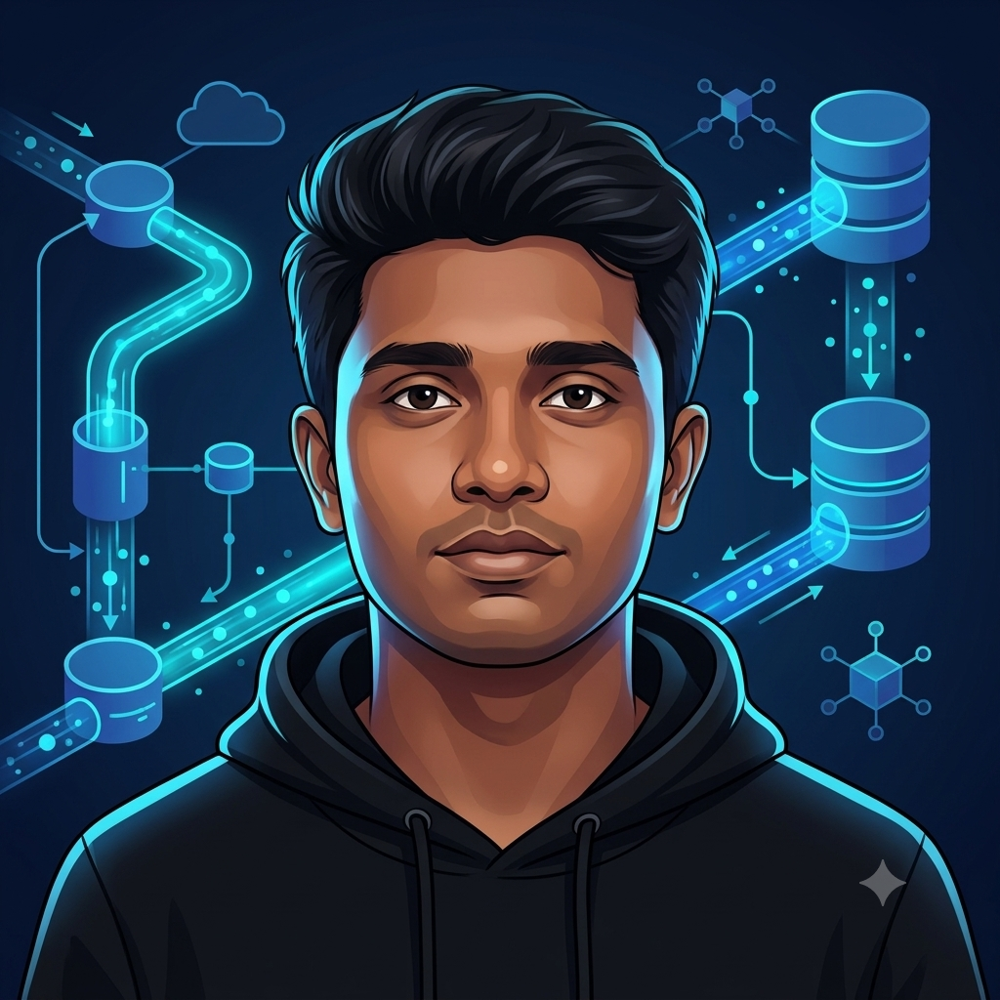

Azure & Cloud
Cloud data pipelines and storage
I work with Azure Data Factory, SQL, Python and PySpark to ingest, transform and validate data. I'm focused on building reliable data workflows and turning raw data into analytics-ready datasets.

01 / ABOUT ME
I'm Dhilip Kumar, a software engineering graduate from VIT Chennai with professional experience as a Data Analyst I supporting Amazon Development Center through Adecco.
My work with data analysis and SQL strengthened my interest in the engineering behind reliable data. I'm developing that foundation through hands-on projects using Azure Data Factory, Python, SQL, PySpark and cloud storage.
One of my key projects is PureMilk — an end-to-end Smart Dairy Milk Silo data pipeline. It brings together event ingestion, data validation, transformation, incremental processing and Azure SQL.
I'm interested in Data Engineer opportunities where I can contribute to data pipelines, improve data quality and continue growing as an engineer.
02 / TECHNICAL TOOLKIT
Tools used in my professional data analysis work and hands-on data engineering practice.
Cloud data pipelines and storage
Processing, querying and automation
Data movement and quality
Analysis and development workflow
03 / SELECTED PROJECTS
Practical projects demonstrating data ingestion, transformation, validation and analytics.
PROJECT_01 / FEATURED
Smart Dairy Milk Silo · End-to-end data engineering
Built a data pipeline for milk silo sensor records, from event ingestion through validation and transformation to analytics-ready data. The workflow uses Azure Event Hubs, Azure Storage, Azure Data Factory and Azure SQL. It includes handling invalid records, incremental processing and watermark tracking.
PROJECT_02
Data analysis & business insights
Analyzed retail sales data to explore sales performance, profitability and business trends using data analysis and visualization techniques.
PROJECT_03
Analytics & machine learning
Explored customer churn patterns, prepared data for analysis, and built a predictive modeling workflow with an interactive Streamlit interface.
04 / PROFESSIONAL EXPERIENCE
Professional experience in data analysis and data quality.
Worked with SQL queries, data validation and reporting for Prime Video Sports data workflows. Experience included querying structured data, supporting data quality checks and working with analytics tools and datasets.
05 / EDUCATION
Vellore Institute of Technology (VIT), Chennai
GPA: 7.70 / 10
06 / CONTACT
I'm interested in Data Engineer opportunities where I can work on data pipelines, cloud data platforms and reliable data processing. Feel free to connect with me.
Email: dhilipkumar.tech@gmail.com
Phone: +91 6379557661